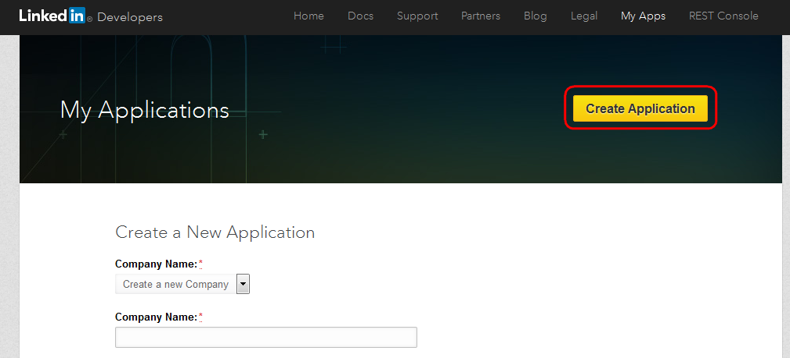

Creating your LinkedIn application
To use LinkedIn authentication on your website, you first need to create a LinkedIn application:
Important: Due to changes in the LinkedIn API, the LinkedIn authentication functionality in Kentico 11 is no longer supported (see the Developer Program Updates announcement for details). To use the feature, you need to upgrade to the latest version of Kentico.
Sign in to your LinkedIn account at https://www.linkedin.com or create a new account.
Click Create Application on the My Applications page.

Creating a new application on LinkedInFill in at least the required fields (marked with red asterisks).
Click Submit. LinkedIn redirects you to a page showing the details of your application.
On the Authentication tab of the Application Settings, add the URLs of all pages where you wish to allow LinkedIn authentication (i.e. pages that display the LinkedIn logon web part). For each URL:
Enter the full absolute URL into the Authorized Redirect URLs field (under OAuth 2.0), including the protocol, domain, virtual directory and trailing slash (if necessary). For example: https://mydomain.com/Special-pages/SignIn
Click Add.
Click Update after you add all required redirect URLs.
The Authentication tab also displays your application's the Client ID and Client Secret values. You need to enter these values in Kentico: Settings -> Security & Membership -> Authentication -> LinkedIn. See Settings - LinkedIn for more details.
Apply with LinkedIn program
If you wish to load birth date values for users who register on your site using their LinkedIn credentials, your LinkedIn application requires the r_fullprofile permission. Loading of the birth dates can be configured through the Require birth date property of the LinkedIn logon web part. If you enable the property without the required permissions for your LinkedIn application, registration and authentication will not work.
To obtain the permission, you need to apply and be approved as a LinkedIn Partner: Apply with LinkedIn